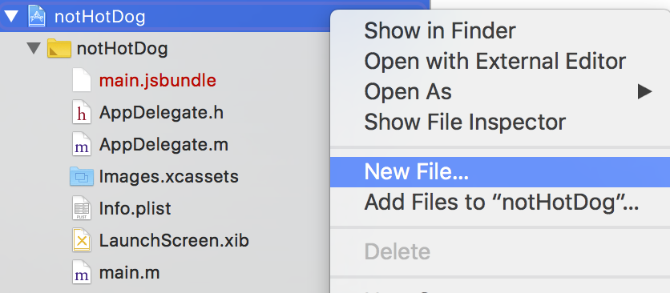
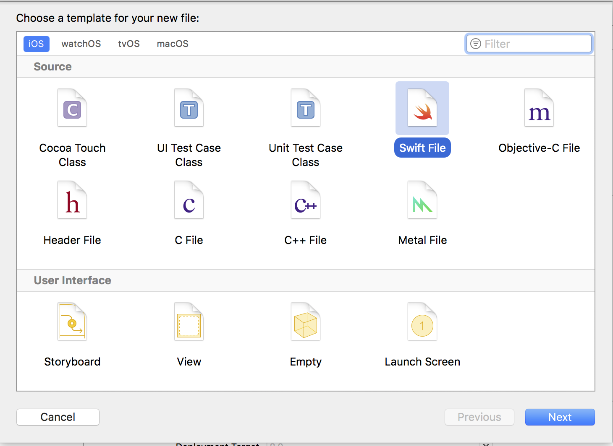
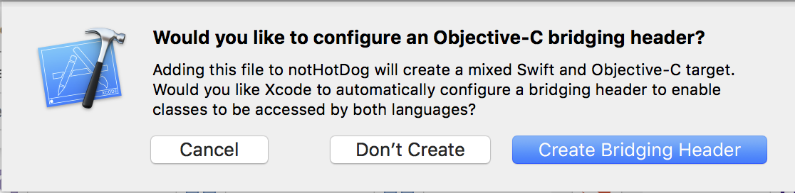
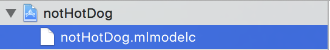
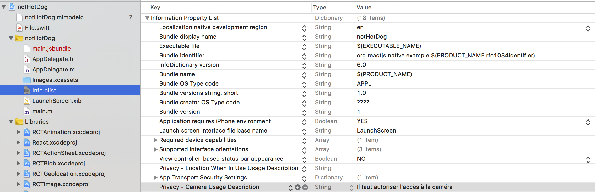

Si vous êtes arrivés à cette partie, ca veut dire que normalement vous avez votre propre modèle de Machine Learning. Si ce n'est pas le cas, je vous invite à lire la première partie de ce tutoriel.
Dans cette partie, nous allons voir ensemble comment intégrer ce modèle dans une application React-Native en utilisant la librairie react-native-core-ml-image, qui apporte les bindings au module natif CoreML d'Apple.
Ce que vous allez accomplir dans cette partie
- Créer un nouveau projet React-Native
- Configurer Xcode pour faire marcher la librairie de Machine Learning
- Reconnaître un hotdog grâce à la caméra de votre iPhone
Les prérequis
- macOS 10.12+
- Xcode 9
- iOS 11+
Créer un projet React-Native
Tout d'abord, il faudra créer un nouveau projet React-Native.
Ouvrez votre terminal, naviguez dans votre dossier de projets et entrez la commande suivante:
react-native init notHotDog (ou tout autre nom)
Au bout de quelques minutes, tout sera installé et vous serez prêt à passer à la suite.
Installer la librairie CoreML
Nous allons utiliser la librairie react-native-core-ml-image
npm install --save react-native-core-ml-image
react-native link
Allez dans votre projet, puis dans le dossier "ios" et double-cliquez sur le fichier notHotDog.xcodeproj pour l'ouvrir dans Xcode
Configurer le projet
Par défaut, les projets en React-Native sont configurés pour utiliser principalement Objective-C. La librairie react-native-core-ml-image étant écrite en Swift, il va falloir changer quelques paramètres dans le projet
Tout d'abord, il va falloir ajouter un fichier Swift au projet


Le nom importe peu, il ne sera de toute façon pas utilisé. Un message apparaît alors vous proposant de créer un "Objective-C Bridging Header": c’est le fichier qui sert à faire le lien entre Swift et les fichiers entête des Classes Objective-C

Enfin, la librairie étant écrite en Swift 4.0, il va falloir spécifier la version de Swift à utiliser (la 3.2 étant la version par défaut).
Cliquez sur la racine du projet (notHotDog), séléctionnez l'onglet "Build Settings", puis tout en bas, changez la version du langage Swift à utiliser.

Importer le modèle CoreML dans le projet
Avant de passer à la partie programmation, il ne reste plus qu'à importer notre modèle de classification d'images dans le projet notHotDog.
Glissez-déposer le modèle (Classifier.mlmodel) et renommez-le notHotDog.mlmodelc (non ce n'est pas une faute de frappe)

CoreML ne fonctionne pas directement avec les fichiers *.mlmodel, il faut d'abord les traduire en *.mlmodelc (c pour compiled), mais notre script Python s'en est déjà occupé.
# Export for use in Core ML
model.export_coreml('Classifier.mlmodel')
Si vous n'avez pas de modèle, je vous invite à lire la première partie de ce tutoriel, qui vous guidera dans la création d'un modèle de classification d'images avec Turi Create.
Autoriser l'accès à la caméra
Dans le fichier Info.plist, cliquez sur le petit plus à la droite de chaque entrée et ajoutez "Privacy - Camera Usage Description" comme montré ci-dessous

C'est tout pour la configuration ! Il ne reste plus qu'à implémenter tout cela.

Implémenter le code
La première chose à faire est d'importer la librairie react-native-core-ml-image dans le projet. Pour cet exemple, tout le code se situera dans le fichier App.js
import CoreMLImage from 'react-native-core-ml-image'
Ensuite, remplacez toute la méthode render() par ce qui vient ci-après:
render() {
let classification = null;
if (this.state.bestMatch) {
if (this.state.bestMatch.identifier && this.state.bestMatch.identifier == "hotdog") {
classification = "Hotdog";
} else {
classification = "Not hotdog";
}
}
return (
<View style={styles.container}>
<CoreMLImage modelFile="notHotDog" onClassification={(evt) => this.onClassification(evt)}>
<View style={styles.container}>
<Text style={styles.info}>{classification}</Text>
</View>
</CoreMLImage>
</View>
);
}
La méthode onClassification nous permet de recevoir des updates quand un nouvel objet a été classifié. Il renvoie les données suivantes:
[{
identifier: "hotdog",
confidence: 0.87
},
{
identifier: "not-hotdog",
confidence: 0.4
}]
Nous n'avons plus qu'à implémenter la méthode onClassification qui se charge de trouver la meilleure classification.
onClassification(classifications) {
let bestMatch = null;
if (classifications && classifications.length) {
classifications.map(classification => {
if (!bestMatch || classification.confidence > bestMatch.confidence) {
bestMatch = classification;
}
});
if (bestMatch.confidence >= BEST_MATCH_THRESHOLD) {
this.setState({
bestMatch: bestMatch
});
}
else {
this.setState({
bestMatch: null
});
}
}
else {
this.setState({
bestMatch: null
});
}
}
Si l'on se base sur les données précédentes, alors bestMatch vaudra
{
identifier: "hotdog",
confidence: 0.87
}
Voici le code complet:
import React, { Component } from 'react';
import {
Platform,
StyleSheet,
Text,
View
} from 'react-native';
import idx from 'idx';
const BEST_MATCH_THRESHOLD = 0.5;
import CoreMLImage from "react-native-core-ml-image";
export default class App extends Component<{}> {
constructor() {
super();
this.state = {
bestMatch: null
};
}
onClassification(classifications) {
let bestMatch = null;
if (classifications && classifications.length) {
classifications.map(classification => {
if (!bestMatch || classification.confidence > bestMatch.confidence) {
bestMatch = classification;
}
});
if (bestMatch.confidence >= BEST_MATCH_THRESHOLD) {
this.setState({
bestMatch: bestMatch
});
}
else {
this.setState({
bestMatch: null
});
}
}
else {
this.setState({
bestMatch: null
});
}
}
classify() {
if (idx(this.state, _ => _.bestMatch.identifier) ) {
if (this.state.bestMatch.identifier == "hotdog") {
return "Hotdog";
} else {
return "Not hotdog";
}
}
}
render() {
return (
<View style={styles.container}>
<CoreMLImage modelFile="notHotDog" onClassification={(evt) => this.onClassification(evt)}>
<View style={styles.container}>
<Text style={styles.info}>{classify()}</Text>
</View>
</CoreMLImage>
</View>
);
}
}
const styles = StyleSheet.create({
container: {
flex: 1,
justifyContent: 'center',
alignItems: 'center',
backgroundColor: 'transparent',
},
info: {
fontSize: 20,
color: "#ffffff",
textAlign: 'center',
fontWeight: "900",
margin: 10,
}
});
Il ne vous reste plus qu'à éxecuter le code sur votre iPhone (cela ne fonctionnera pas sur le simulateur).
Si vous avez tout bien fait, l'app vous demandera la permission d'accéder à votre appareil photo et vous pourrez alors distinguer un hotdog du teckel de votre voisine.
Merci de m'avoir lu, et si l'article vous a plu, n'hésitez pas à le partager sur les réseaux sociaux.
Jérémie.